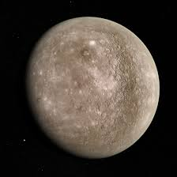

Mercurio
 Características físicas
Características físicas
| Masa | 3.302x10^23 kg |
| Radio | 2439.7 km |
| Distancia relativa al Sol | 0.387 UA |
| Tiempo en completar la órbita | 87 días |
| Temperatura media | 166ºC |
| Número de satélites conocidos | 0 |
Mercurio es el planeta del sistema solar más próximo al Sol y el más pequeño. Forma parte de los denominados planetas interiores o terrestres y carece de satélites naturales al igual que Venus. Se conocía muy poco sobre su superficie hasta que fue enviada la sonda planetaria Mariner 10 y se hicieron observaciones con radar y radiotelescopios. Posteriormente fue estudiado por la sonda MESSENGER de la NASA y actualmente la astronave de la Agencia Europea del Espacio (ESA) denominada BepiColombo, lanzada en octubre de 2018, se halla en vuelo rumbo a Mercurio a donde llegará en 2025 y se espera que aporte nuevos conocimientos sobre el origen y composición del planeta, así como de su geología y campo magnético.
Propiedades de la atmósferaMercurio, el planeta rocoso más pequeño, tiene la atmósfera más ligera de todo el Sistema Solar. Esto se debe principalmente a dos razones. La primera de ellas es su tamaño, la gravedad superficial en Mercurio es tan débil que tiene muy complicado retener gases cerca de su superficie. La segunda y más importante, es su cercanía al Sol unido a su débil campo magnético. Esto causa que el violento viento solar arranque casi toda su envoltura gaseosa. Aún así, Mercurio tiene un vestigio de atmósfera, tan débil que apenas se puede distinguir del vacío. Su presión es de 10-15 atmósferas. Su composición es un 42% de oxígeno, 29% de sodio, 22% de hidrógeno, 6% de helio, 0,5% de calcio y otro 0,5% de potasio. Además contiene trazas de otros compuestos, como dióxido de carbono, agua nitrógeno y los demás gases nobles.
 Exploración espacialLlegar hasta Mercurio desde la Tierra supone un significativo reto tecnológico, ya que la órbita del planeta está mucho más cerca que la terrestre del Sol. Una nave espacial con destino a Mercurio lanzada desde nuestro planeta deberá de recorrer unos 91 millones de kilómetros por los puntos de potencial gravitatorio del Sol. Comenzando desde la órbita terrestre a unos 30 km/s, el cambio de velocidad que la nave debe realizar para entrar en una órbita de transferencia, conocida como órbita de transferencia de Hohmann (en la que se usan dos impulsos del motor cohete) para pasar cerca de Mercurio es muy grande comparado con otras misiones planetarias. Además, para conseguir entrar en una órbita estable el vehículo espacial debe confiar plenamente en sus motores de propulsión, puesto que el aerofrenado está descartado por la falta de atmósfera significativa en Mercurio. Un viaje a este planeta en realidad es más costoso en lo que a combustible se refiere por este hecho que hacia cualquier otro planeta del sistema solar.